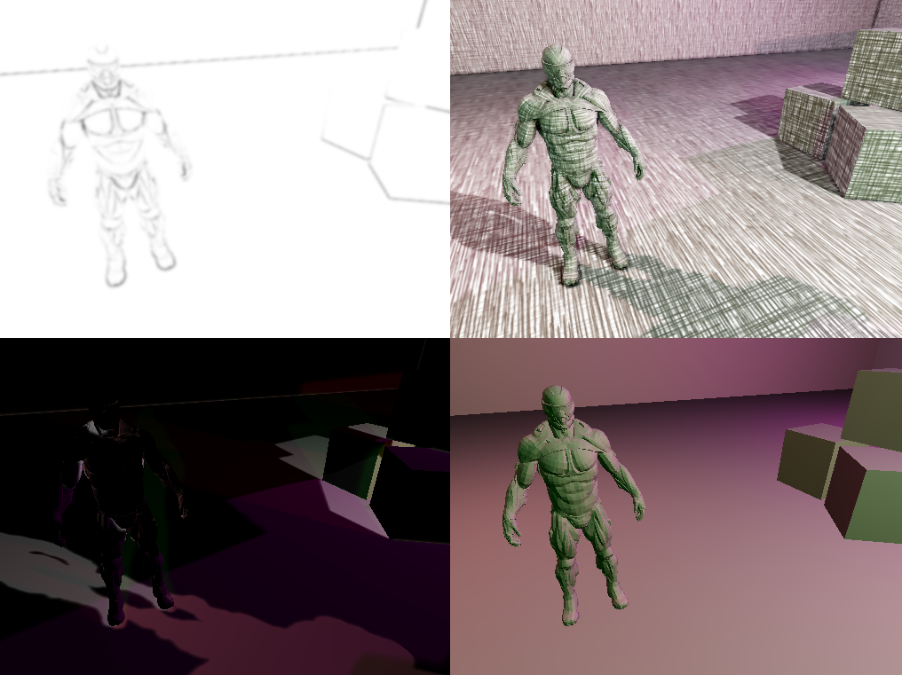

This is a stylized renderer that combines diffuse shading, SSAO, variance shadow maps, and realtime hatching.
The source-code can be found on my GitHub.
My implementation of real-time hatching was based on the paper introducing it in 2000. I also used the hatching textures created by Hernan Liatis and by Jaume Sanchez.
Praun et al., Real-time Hatching, 2000
Jake Zien, Implementing a 'sketch' style of rendering in WebGL, 2014
Hernan Liatis, CS7490 Final: Real-time Hatching, 2012
Cross-hatching GLSL shader, Jaume Sanchez, 2013
My implementation of SSAO was primarily based on the following articles. You can find details about my implementation under 'results'.
Daniel Holden, Pure Depth SSAO, 2011
John Chapman, SSAO Tutorial, 2011
Christoph Weinzierl-Heigl, Hemispherical SSAO, 2013
My implementation of VSMs was based mostly on the article by Andrew Lauritzen and on Christian Forfang's VSM implementation.
Christian Forfang, Shadow Mapping in OpenGL 3+, 2014
Andrew Lauritzen, Summed-Area Variance Shadow Maps, 2007
I used the Nanosuit model and the Sponza scene created by Crytek. Both are free to use for non-commercial use.
Crytek, Nanosuit from Crysis, 2007
Crytek, Dabrovik Sponza, 2011